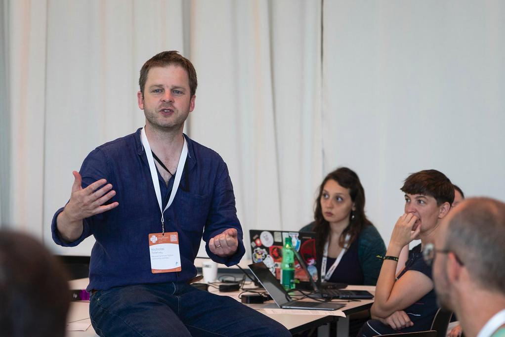
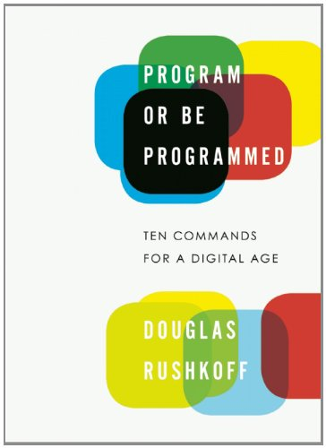
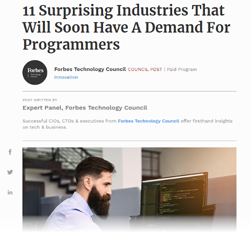
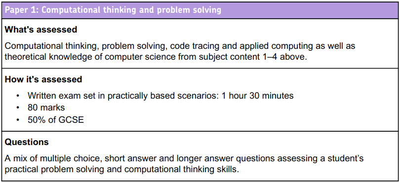
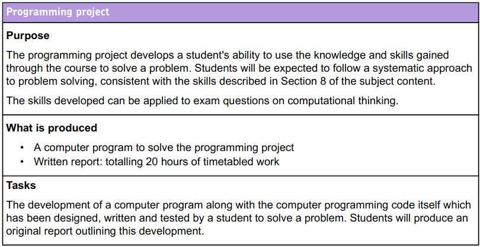
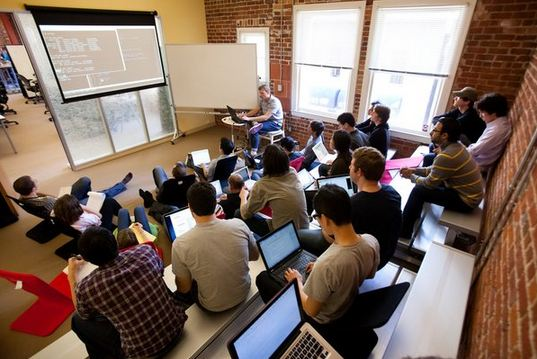
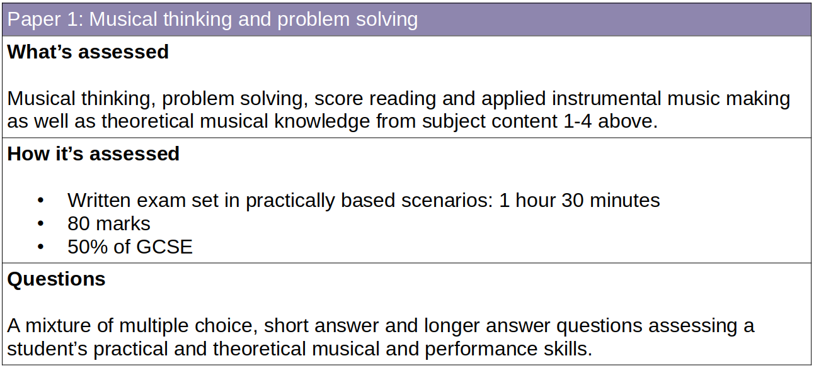
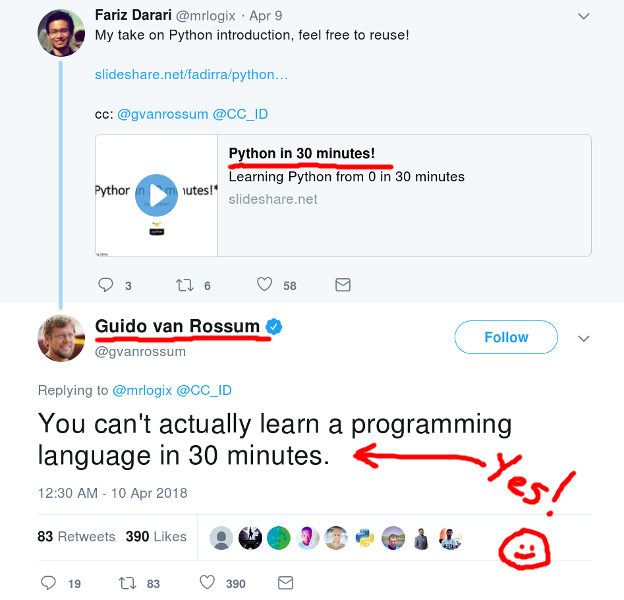
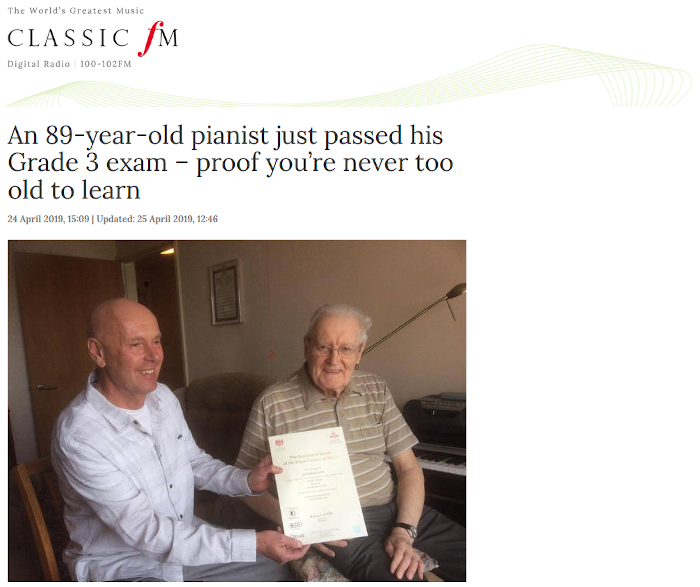

CodeGrades
Educating for a Coding Culture
(A lazy engineer's long term view)
Nicholas H.Tollervey / @ntoll
Thanks for invite.
My name is Nicholas - I'm a freelance Python
developer from England!

Describe all the Python / programming things I do.
I'm here to tell you the story of CodeGrades - a project
to help folks acquire the coding skills they need to create
the stuff they want.
I'm going to do this as a "lazy developer", doing as
little original work as possible.
Software is eating the world. ~ Marc Andreessen
Marc A.'s famous quote from the Wall Street Journal
article. He created the first popular graphical web
browser and is now one of the most successful Silicon
Valley venture capitalists.

The real question is, do we direct technology, or do we
let ourselves be directed by it and those who have mastered
it? ~ Doug Rushkoff
Doug's point is that ignorance of coding disempowers
you in today's world. If you can code, you have autonomy
to make the digital world as you see fit.
Autonomy is an important aim for all educators (all
teachers are trying to do themselves out of a job).

[B]usinesses across a wide range of industries are seeking
professionals with programming and coding experience, even if
their company’s work is not directly related to
technology. ~ Forbes
Coding disrupts everything. No matter the industry,
it'll need to use computers. For the sake of the economy
we don't want to be the illiterate ones in the
library.
Stereotypes stop you doing stuff.
Coding has an image problem: white, straight, dudes
write code. Hollywood doesn't help. David Heinnemar
Hanson says it well: we're software authors, not
software engineers. We write for a living. Coders don't
need to be misfits, or know kung fu.
Current Solutions
Given this skills based narrative, what are folks
doing at the moment..?
Worldwide success... millions of units
sold.
But what do you do with it..?
Explain Girl Guides story from PyCon UK.
BBC recapturing the gloy days of the 1980s.
But what do you do with it?
Nobody asked teachers what they wanted! (I
should know, I helped make this.
Others are creating more complicated and friendly
devices (for example Adafruit). These are open source
boards containing a huge number of sensors and
outputs.
Still... "how do I do stuff?"
Answer... "you write software"
Also, such problems are solved problems which often
don't speak to beginner programmers.
Beginner programmers are presented with projects but
little opportunity for play and experimentation.
What's the UK education system doing to help..?
GCSE/A levels?

While GCSE Computing is a broader subject than just
coding, all of the marks are obtained via written exams in
a closed book situation.
GCSE/A levels?

This looks more interesting and allows students to
actually practice creating a project. But they get zero
marks for it.
Legitimate to ask: what's the point..?
I realise exam boards have their hands tied to some
extent by the government, but as a "person from industry"
this looks like a very bad joke.

Between £8k-£10k to attend a bootcamp.
If you're an older learner or you want to change careers
then Bootcamps are one option if you can afford them.
Typically, they're around three months of intensive
learning. I've trained many graduates of such schemes.
Or you're on your own... :-(
While the internet is a wonderful resource, nobody is
there to show, help, encourage or support.
What if we taught music like we teach programming?
On a train from NY to Boston. Not Rhapsody in Blue
but... a thought experiment.
"I heard it as a sort of musical kaleidoscope of
America, of our vast melting pot, of our unduplicated
national pep, of our metropolitan madness."

Dammit, standards require we have written exams for
music.

Back in the land of coding...
WAT? 30 minutes? Who is this Guido person anyway...
what does HE know...!?!?!?!
If you have £10k, there's nothing wrong with a three
month bootcamp.
But you'll program like someone who has
only been coding for three months.
Like learning to play music, learning to code takes
time, effort, discipline and practice.
Furthermore, please believe me when I say learning
to code means picking up a certain sort of culture,
heuristics, practices and history (don't re-invent the
wheel). It's not just about knowledge acquisition.
Can you code like a Pirate?
This is a simple fun question that's often used to
break the ice in coding interviews or dojos.
Think about it for a moment. How would YOU do
it..?
Simple Pirate Python
import random
pirate_dictionary = {
"hello": "ahoy",
"you": "ye",
"my": "me",
"where": "whar",
"is": "be",
}
pirate_phrases = ["thar she blows!", "arrr!", "avast ye!", ]
def translate(english):
words = english.lower().split(" ")
pirate = [pirate_dictionary.get(word, word) for word in words]
if random.randint(0, 5) == 0:
pirate.append(random.choice(pirate_phrases))
return " ".join(pirate)https://arrr.readthedocs.io/en/latest/
I've never met a bootcamp graduate that could do
this. No disrespect to bootcamps or their graduates, but
while they have the knowledge, they don't have the
culture, practices or perspectives to quickly solve
this.
What if we taught programming like we teach music..?
How do we get from this...
When I show you the following pictures, think about
how this maps onto computing education -- especially
programming.
... to this ...
... or even this ..?
900 years of music education
Good artists copy, great artists steal
(Lazy engineers don't reinvent the
wheel...)
It works..! I am a product of this education.
What could I steal from music education and re-apply
to coding education..?
The grading system.
8 steps from beginner to not-so-dangerous-beginner
Syllabus is created by professional musicians
Examiners are professional musicians
A grading contains practical assessments that
reflect what a musician actually does and requires
knowledge of what a musician needs to understand.

The grading system.
For learners of all ages
There is a focus on the cultural practices
It is a friendly and supportive (if nerve
racking) experience.
Supportive feedback is given, written commentary
provided and suggestions for improvement or further
development.
Getting a grade is validation of attainment by
an expert in the field.
"Asking what sort of education and learning our community
supports is how we decide what sort of community we
become.
For it is through education and learning that we engage
with our future colleagues, friends and supporters."
Nicholas Tollervey, 2015. :-)
Why is education important?
Learning Python is one way to promote digital
autonomy. We want beginner programmers to learn about
our wonderfully diverse and international community
built using a model of open collaboration.
How have the UK Python community engaged in
education to further this aim?